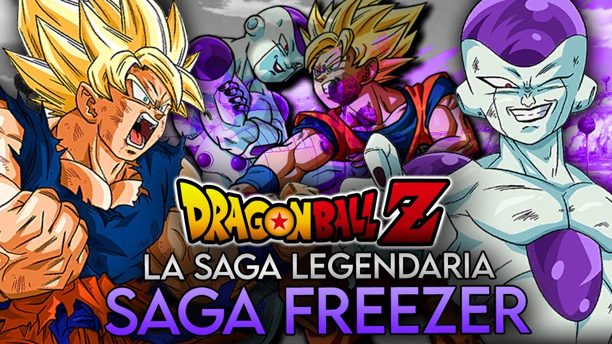
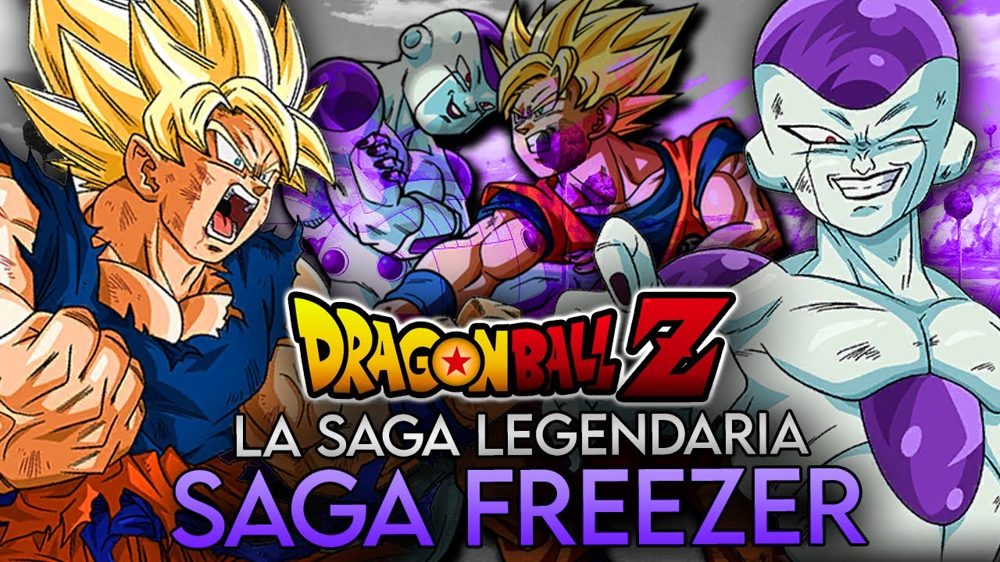
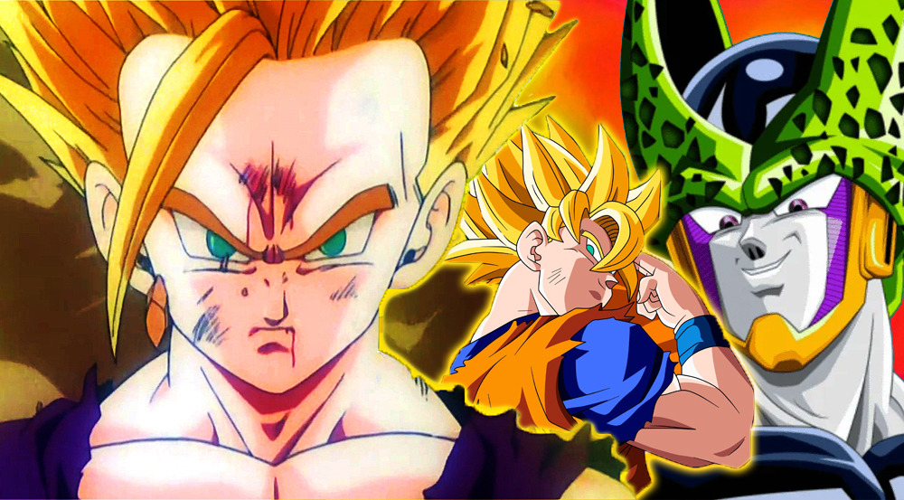

Saga de Freezer
Goku y sus amigos viajan al planeta Namek para enfrentar a Freezer, uno de los villanos más poderosos y temidos del universo.
Explora la épica saga de Dragon Ball y descubre los personajes más icónicos.
Ver PersonajesDragon Ball es una serie de manga y anime creada por Akira Toriyama. Sigue las aventuras de Son Goku desde su niñez hasta la edad adulta mientras entrena en artes marciales y explora el mundo en busca de las siete esferas del dragón, conocidas como Dragon Balls. Las Dragon Balls tienen el poder de invocar a un dragón que puede conceder un deseo a quien reúna todas las esferas.
La serie se divide en varias sagas principales, comenzando con la búsqueda de las Dragon Balls, pasando por torneos de artes marciales, y enfrentando a poderosos villanos como Freezer, Cell, y Majin Buu.
Goku y sus amigos viajan al planeta Namek para enfrentar a Freezer, uno de los villanos más poderosos y temidos del universo.
Un androide creado por el Dr. Gero, Cell, amenaza a la Tierra con absorber a los Guerreros Z para alcanzar su forma perfecta.
El malvado Majin Buu, una criatura con un poder destructivo inimaginable, pone a prueba a Goku y sus amigos como nunca antes.

Goku ha logrado numerosas transformaciones a lo largo de la serie, cada una aumentando su poder y habilidades: